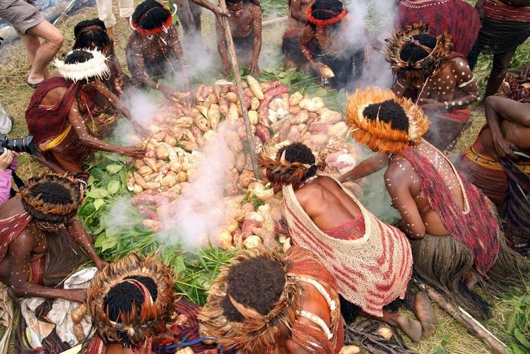
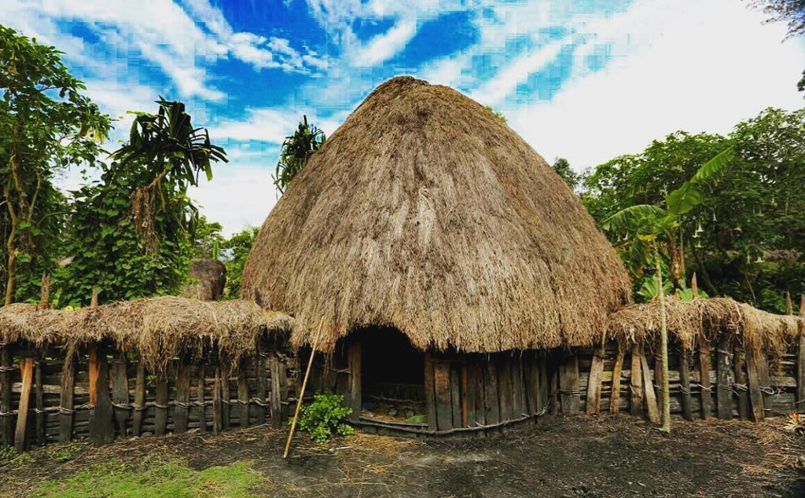

// Tradisi & Upacara
Ritus Kehidupan

Upacara Bakar Batu
Bakar batu adalah tradisi memasak komunal yang sakral bagi suku-suku di Pegunungan Tengah Papua, terutama suku Dani, Lani, dan Yali.
Batu-batu dipanaskan hingga membara, lalu digunakan untuk memasak babi, ubi, dan sayuran secara bersama-sama. Upacara ini diadakan dalam momen penting seperti pernikahan, perdamaian antar suku, atau menyambut tamu.

Rumah Honai
Honai adalah rumah tradisional berbentuk bulat dengan atap jerami suku Dani. Desainnya bukan sekadar tempat tinggal ia adalah filosofi tentang kehidupan yang melingkar, tanpa sudut, tanpa batas.
Terdapat honai khusus untuk pria, wanita (Ebei), dan ternak babi (Wamai). Setiap struktur memiliki peran sosial yang jelas dalam komunitas.

Noken - Tas Jiwa Papua
Noken bukan sekadar tas. Bagi masyarakat Papua, noken adalah simbol kehidupan, perdamaian, dan kesuburan. Dirajut dari serat kulit pohon genemo atau anggrek, proses pembuatannya bisa memakan waktu berminggu-minggu.
Pada 4 Desember 2012, UNESCO menetapkan Noken sebagai Warisan Budaya Takbenda yang Membutuhkan Perlindungan Mendesak.